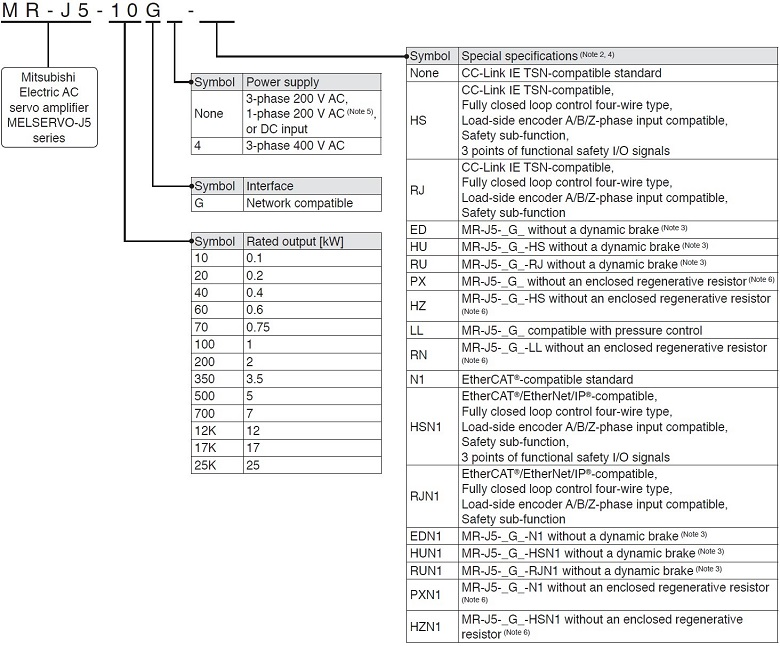
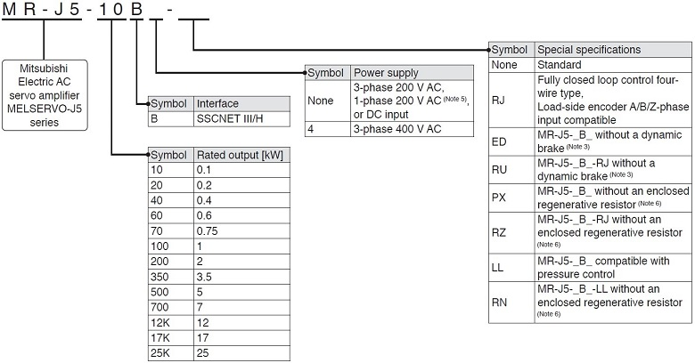
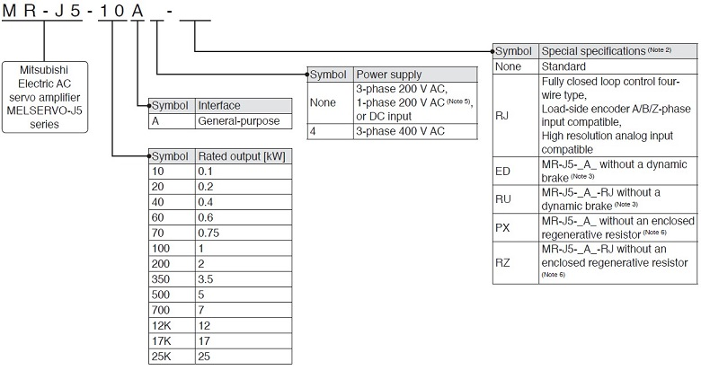
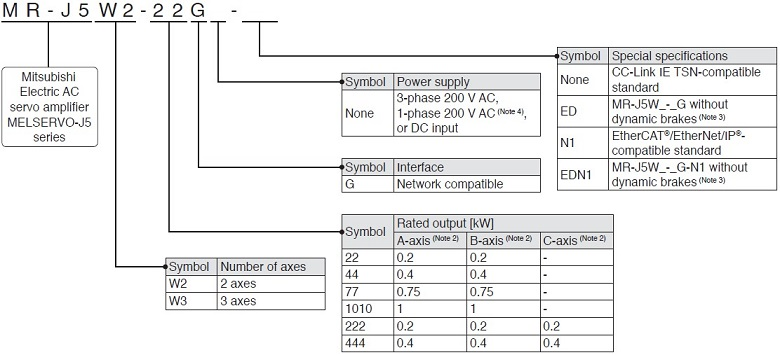
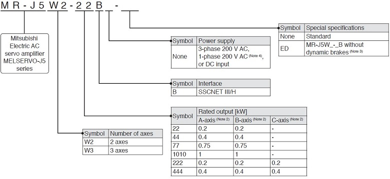
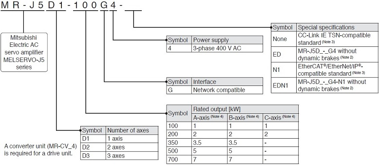
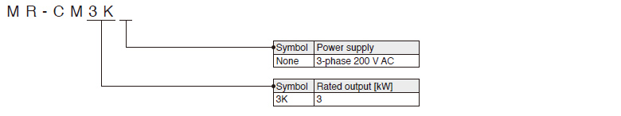
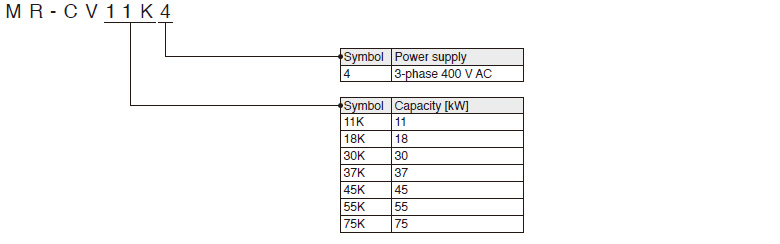

MELSERVO-J5 Series Servo Amplifier Model Designation

- 1-Axis Servo Amplifier
- Multi-Axis Servo Amplifier
- Drive Unit
- Simple Converter
- Power Regeneration Converter Unit
- Related Link
1-Axis Servo Amplifier (Note 1)
G
G-HS
G-RJ

B
B-RJ

A
A-RJ

- Notes:
- 1. This section describes what each symbol in a model name indicates. Some combinations of symbols are not available.
- 2. For the servo amplifier firmware version supporting each function, refer to "MR-J5 User's Manual".
- 3. A dynamic brake which is built in the 7 kW or smaller servo amplifiers is removed. When the servo amplifiers without the dynamic brake are used, the servo motors coast to a stop and do not stop immediately at alarm occurrence or power failure. Take measures to ensure safety on the entire system. When specified servo motors are used, the electronic dynamic brake may activate at an alarm occurrence. The dynamic brake can be disabled with a servo parameter setting. Refer to "MR-J5 User's Manual" for details.
- 4. For the restrictions on the communication cycle of each function, refer to "Restrictions" in MELSERVO-J5 catalog.
- 5. A power supply of 1-phase 200 V AC is supported by 0.1 kW to 2 kW servo amplifiers.
- 6. Available in 12 kW to 25 kW servo amplifiers. A regenerative resistor (standard accessory) is not enclosed. Refer to "MR-J5 User's Manual" for details.
Multi-Axis Servo Amplifier (Note 1)
WG

WB

- Notes:
- 1. This section describes what each symbol in a model name indicates. Some combinations of symbols are not available.
- 2. A-axis, B-axis, and C-axis indicate names of axes of the multi-axis servo amplifier. The C-axis is available for the 3-axis servo amplifier.
- 3. Dynamic brakes which are built in the servo amplifiers are removed. When the servo amplifiers without the dynamic brakes are used, the servo motors coast to a stop and do not stop immediately at alarm occurrence or power failure. Take measures to ensure safety on the entire system. When specified servo motors are used, the electronic dynamic brake may activate at an alarm occurrence. The dynamic brake can be disabled with a servo parameter setting. Refer to "MR-J5 User's Manual" for details.
- 4. A power supply of 1-phase 200 V AC is supported by 0.2 kW to 0.75 kW servo amplifiers.
Drive Unit (Note 1)
DG

- Notes:
- 1. This section describes what each symbol in a model name indicates. Some combinations of symbols are not available.
- 2. A dynamic brake which is built in the drive units is removed. When the drive units without the dynamic brake are used, the servo motors coast to a stop and do not stop immediately at alarm occurrence or power failure. Take measures to ensure safety on the entire system. When specified servo motors are used, the electronic dynamic brake may activate at an alarm occurrence. The dynamic brake can be disabled with a servo parameter setting. Refer to "MR-J5D User's Manual" for details.
- 3. MR-J5D1-G4(-N1) supports fully closed loop control four-wire type input and the load-side encoder A/B/Z-phase input as standard.
- 4. A-axis, B-axis, and C-axis indicate names of axes of the multi-axis drive unit. The B-axis is available for the 2-axis drive unit and the 3-axis drive unit. The C-axis is available for the 3-axis drive unit.
Simple Converter
G
G-RJ
WG
B
B-RJ
WB
A
A-RJ

Power Regeneration Converter Unit
DG
